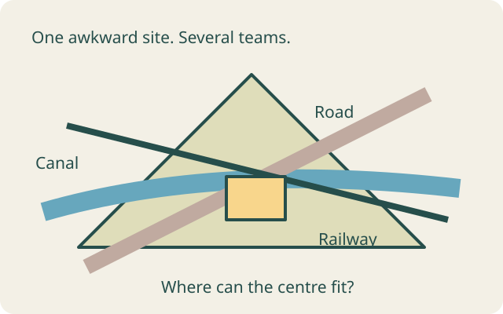

Early enquiry · Six distinct variants
How has AI interpreted the brief?
Explore the early interpretations
Inspect the interfaces, topology and system architecture implied by sketches, sections and arrangements. Notice what each interpretation makes visible, assumes or omits.
First look: switch the fixed sketch from Plan View to Section View. Compare the overhead line, raised railway and mine below ground.
These are exploratory interpretations, not a ranked sequence, measured AI benchmark or engineering proof.